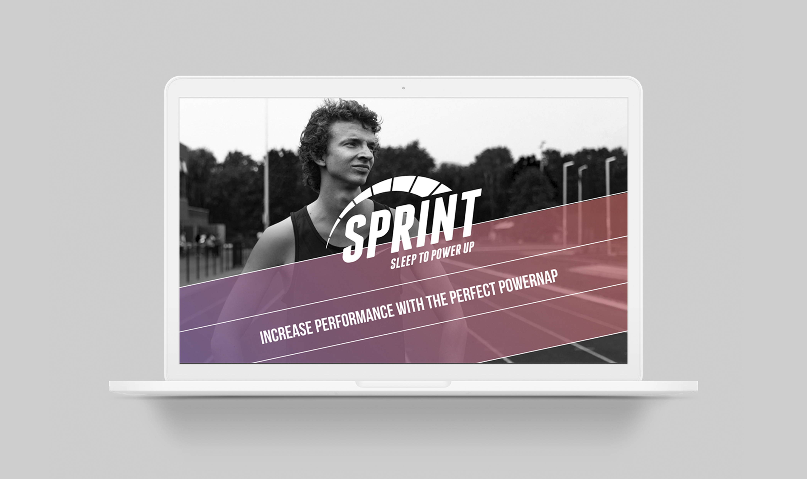

Verbeelden en maken
Sprint // Propedeuse Jaar
Situatie
Sprint is gemaakt voor topsporters in de atletiek die een perfect slaapritme willen. Voor topsporters is slaap essentieel voor hun prestaties. Vele proberen overdag een powernap te doen, maar vaak wordt deze niet goed gehouden. Voor iedereen is een powernap namelijk anders. Project slaap was een vrij project zonder opdrachtgever.
Taak
Sprint heb ik in een teamverband gemaakt, samen met klasgenoten Leslie en Teunis. Zij namen de verantwoording over de wearable waar veel techniek bij kwam kijken. Ik ging mij verdiepen het design van de wearable en in de onepager en het design ervan. Leslie heeft alle foto's gemaakt voor de onepager en het uiteindelijke logo. Ons doel was om samen een overall look & feel te ontwerpen.

Activiteiten
Tijdens dit project hebben we veel deskresearch gedaan. Wat houdt een powernap in? Welke materialen zijn mogelijk en prettig om je pols? Moet de wearable wel om je pols voor de beste resultaten van gegevens? Het bandje is meerdere malen aangepast om het aangenamer te maken voor de sporter. We hebben ook workshops gevolgd over interactie, branding, audio en voice controles en prototypes bouwen. Deze workshops hebben ervoor gezorgd dat wij tot een eindresultaat zijn gekomen. Mijn teamgenoten gingen dieper in op de interactie en ik meer op de branding.
Resultaat
In het logo zit een powerup idee en letters die omhoog gaan wat staat voor vooruitgang. De kleur licht paars staat voor slaap en rust en in tegenstelling tot dat staat het oranje voor actie en power. Hier wilden we een balans in vinden, waardoor het een gradient (verloop) is geworden. Het bandje is van zacht materiaal wat niet van je pols glijdt. Omdat siliconen materiaal moeilijk is af te schuiven van je pols hebben we een klipje bedacht, gebaseerd op de Apple Watch. We zijn genomineerd voor ons design en daarmee tweede geworden.
Als ik kijk naar wat er minder goed ging, was dat het vertalen van onze XD prototype van de onepager naar een gecodeerde webpagina. Dit bracht enige moeite met zich mee. Maar mijn teamgenoot Teunis zei dat we het konden, dus zijn we toch een heel eind gekomen. Hier ben ik erg trots op.

Reflectie
Ik vind Sprint een goed voorbeeld voor de competentie verbeelden en maken, omdat we een passend fysiek prototype hebben gemaakt en deze stijl ook doorgevoerd hebben in de website en app. Qua samenwerking was dit ook pittig. Leslie en ik hebben beide een vooropleiding in Media Vormgeving gedaan en onze stijl botste soms. Dit zorgde voor een aantal discussies. Dat is natuurlijk niet verkeerd, want we konden er vaak goed over praten maar we waren soms ook eigenwijs. Mijn sterkte punt vond ik het doorzettingsvermogen en het niet over me heel laten lopen van punten waar ik het niet mee eens ben.